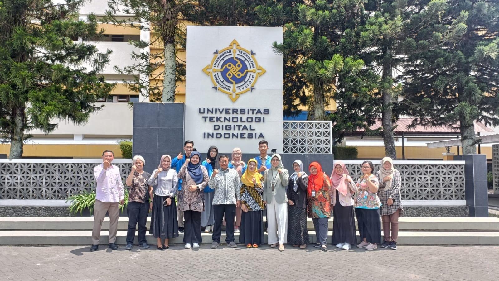

Cerita tentang pengalaman Pertukaran Mahasiswa Merdeka di UTDI Yogyakarta Tahun 2023
Proses Seleksi
Tahun 2023 adalah tahun paling berkesan dan menyenangkan selama ini. Karena di tahun itu saya memiliki kesempatan untuk mengikuti Pertukaran Mahasiswa Merdeka di Universitas Teknologi Digital Indonesia Yogyakarta. Tentu dengan
melewati beberapa proses di awal untuk sampai bisa lolos dan akhirnya berangkat ke kampus tujuan.
Proses pertama yang saya lalui, yaitu pastinya dengan mendaftarkan diri untuk mengikuti program PMM ini. Setelah mendaftar sesuai dengan persyaratan yang ada, proses selanjutnya adalah seleksi administrasi. Alhamdulillah saya
lolos untuk seleksi yang pertama ini, nama saya ada didalam daftar hasil seleksi PMM yang dilakukan oleh pihak prodi dan dinyatakan lolos administrasi. Ada 3 orang Mahasiswa yang lolos juga dengan pilihan Universitas yang sama
dan akhirnya menjadi teman saya. Ada juga beberapa teman saya yang mendaftar namun tidak lolos seleksi ini, mungkin ada beberapa persyaratan mereka yang kurang.
Setelah proses seleksi administrasi selesai, Mahasiswa yang lolos akan mengikuti tes wawancara. Wawancara telah selesai dilaksanakan, selanjutnya adalah menunggu pengumunan hasil akhir seleksi PMM ini. Beberapa nama ada didalam
daftar hasil seleksi tersebut termasuk nama saya. Proses seleksi pun telah selesai, namun Mahasiswa harus mengumpulkan beberapa persyaratan lagi untuk bisa berangkat mengikuti program PMM ini.
Keberangkatan & Penyerahan Mahasiswa

Kamis, 7 September 2023, tiba saatnya untuk kami berangkat ke Jogja, kami berempat berangkat menggunakan kereta api dari Stasuin Pasar Senen menuju Stasiun akhir Lempuyangan Yogyakarta, Alhamdulillah biaya untuk transportasi ini
sudah ditanggung oleh pihak kampus kampus, jadi kami tinggal berangkat saja. Kami berangkat dari Jakarta pada malam hari dan sampai di Jogja pagi hari.
Sesampainya di Jogja, kami langsung keluar dari stasuin dan mencari tempat makan untuk sarapan. Setelah selesai sarapan kami langsung melanjutkan perjalanan ke tempat kost masing-masing, kami harus istirahat sebentar karena pada
hari ini juga kami akan langsung ke kampus tujuan bersama dosen kami.
Pukul 10.00 WIB kami berempat kembali berkumpul, kami berkumpul di halaman kampus UTDI serta menemui dosen-dosen kami, lalu kami semua memasuki ruangan rapat untuk melakukan penyerahan Mahasiswa dari pihak UNPAM kepada pihak
UTDI. Disini kami diterima dengan sangat baik, bahkan Rektor UTDI juga ikut hadir dalam proses ini. Proses penyerahan pun berlangsung singkat, kami pun berpamitan untuk kembali beristirahat dan dosen-dosen kami juga berpamitan
untuk kembali ke Tangerang pada sore harinya.
Pengalaman Belajar
Hari Senin, hari pertama untuk mengikuti pembelajaran di kampus UTDI ini. Kami berempat merasakan hal yang sama, yaitu rasa gugup, malu, deg-degan, namun tetap bersemangat karena akan merasakan hal baru. Pukul 08.00 kami
mengikuti kelas pertama, yaitu mata kuliah Analisis dan Desain Sistem. Perkuliahan pun di mulai, dosen pengampu kami memberi tahu pada mahasiswa di kelas bahwa hari ini terdapat teman baru, yaitu kami berempat. Kami sedikit
melakukan perkenalan kepada dosen dan teman-teman dikelas, setelah itu barulah mulai pembelajaran.
Hari-hari berikutnya kami masih melakukan hal yang sama, yaitu perkenalan dengan dosen dan teman-teman. Kami merasa senang karena dapat diterima dengan baik oleh dosen-dosen maupun teman-teman disini.
Mata Kuliah Analisis dan Desain Sistem
Semakin lama, kami semakin merasa nyaman belajar dan berkuliah disini, dengan suasana baru dan lingkungan baru. Kami disini juga memiliki teman-teman walaupun tidak banyak. Mereka semua baik dan bisa saling membantu apabila
terdapat kesulitan dalam belajar. Mereka juga terlihat senang karena bisa mendapatkan teman dari kampus dan daerah yang berbeda.
Kuliah Umum Informatics College Student Roadmap
Kami juga terkadang mengikuti kegiatan yang diadakan oleh kampus, seperti pengajian bulanan rutin, beberapa seminar dan sosialisasi, serta acara-acara lainnya. Banyak yang bisa didapat dari mengikuti kegiatan-kegiatan tersebut,
bisa mendapatkan ilmu, informasi baru, pengalaman baru, dan juga bisa menambah relasi.
Yogyakarta sebagai kota pelajar yang kaya akan budaya juga memberikan pengalaman yang tak terlupakan. Saya menjelajahi berbagai tempat wisata, mencoba makanan lokal yang enak-enak, dan menghadiri berbagai acara seni dan budaya
yang menarik.
Masih banyak sebenarnya cerita menarik yang saya miliki, namun terlalu panjang apabila saya ceritakan semuanya disini. Saya merasa sangat bersyukur atas pengalaman belajar yang saya dapatkan di UTDI Yogyakarta.
Terima kasih kepada UTDI Yogyakarta, dosen, dan teman-teman yang telah membuat pengalaman ini begitu berharga. Saya akan mengingat kenangan indah ini selamanya.
Pelepasan Mahasiswa
Tidak terasa sudah satu semester kami menjalani program pertukaran ini, kami juga sudah melaksanakan Ujian Akhir Semester. Senin 15 januari 2023, kami melakukan pertemuan sekaligus pelepasan yang dilakukan diruang sidang 1 UTDI.
Kami memberikan ucapan terimakasih kepada bapak dan ibu dosen UTDI, karena selama ini sudah membimbing kami dengan sangat baik serta ilmu-ilmu yang diberikan semoga bisa bermanfaat untuk kami semua.
Penyerahan Kenang-kenangan kepada Ibu Sri Redjeki, S.Si., M.Kom., PhD selaku Rektor UTDI